X3515–X3601¶
Euler Line Intercepts & Named Geometric Centers
Euler line intercepts of central lines (X3515–X3552), together with the Dosa, Pappus, Moses circumcircle/infinity, Don Quixote, Beltrami-Euler, Beltrami-Parry, Myakishev conic, Dixit, Odehnal, and Liu points (X3555–X3601).
X3515–X3601 (Euler Line Intercepts & Named Geometric Centers) — 16 representative centers (from 87 in collection) constructed on acute reference triangle \((a, b, c) = (5, 6, 7)\) with unit baseline AB = \(1\).¶
X3515EULER LINE INTERCEPT OF LINE X154X_185
X3515 = crosspoint of X250 and X1301
X3516EULER LINE INTERCEPT OF LINE X64X_184
X3516 = homothetic center of Trinh triangle and mid-triangle of orthic and circumorthic triangles
X3517EULER LINE INTERCEPT OF LINE X154X_389
X3517 = homothetic center of tangential triangle and mid-triangle of orthic and circumorthic triangles
X3518EULER LINE INTERCEPT OF LINE X51X_54
X3518 = X1179-Ceva conjugate of X4
X3519ISOGONAL CONJUGATE OF X3518
X3519 is the isogonal conjugate of X3518.
X3520EULER LINE INTERCEPT OF LINE X54X_74
X3520 = reflection of X4 in X1594
X3521ISOGONAL CONJUGATE OF X3520
X3521 is the isogonal conjugate of X3520.
X3522EULER LINE INTERCEPT OF LINE X8X_165
Other recent results on representations of points on the Euler line are given in
X3523EULER LINE INTERCEPT OF LINE X35X_390
X3523 = anticomplement of X3090
X3524EULER LINE INTERCEPT OF LINE X35X_1058
X3524 = trisector nearest X3 of segment X2X3
X3525EULER LINE INTERCEPT OF LINE X69X_575
X3525 = crosspoint of X3316 and X3317
X3526EULER LINE INTERCEPT OF LINE X49X_182
X3526 = midpoint of X3090 and X3523
X3527ISOGONAL CONJUGATE OF X631
X3527 is the isogonal conjugate of X631.
X3528EULER LINE INTERCEPT OF LINE X35X_1056
X3528 = pole of van Aubel line wrt conic {{X13,X14,X17,X18,X20}}
X3529EULER LINE INTERCEPT OF LINE X516X_944
X3529 = anticomplement of X382
X3530EULER LINE INTERCEPT OF LINE X15X_3411
X3530 = complement of X546
X3531INTERSECTION OF LINES X(3,373) AND X(69,381)
X3531 = perspector of circle (X3,2R)
X3532INTERSECTION OF LINES X(6,1204) AND X(64,1620)
Let DEF be the cevian triangle of X69 and A' the center of the circle that passes through D and through points where the line EF cuts to the circumcircle, and define B' and C' cyclically. The lines AA', BB', CC' concur in X3532. (Angel Montesdeoca, October 30, 2019)
X3533EULER LINE INTERCEPT OF LINE X371X_3317
X3533 = pole of Napoleon axis wrt conic {{X2,X15,X16,X17,X18}}
X3534EULER LINE INTERCEPT OF LINE X154X_2777
X3534 = Stammler isogonal conjugate of X6
X3535EULER LINE INTERCEPT OF LINE X275X_3317
X3535 = inverse-in-orthocentroidal-circle of X3536

X3536EULER LINE INTERCEPT OF LINE X19X_587
X3536 = inverse-in-orthocentroidal-circle of X3535
X3537EULER LINE INTERCEPT OF LINE X1038X_1058
As a point on the Euler line, X3537 has Shinagawa coefficients \((2E, -2E + F)\).
X3538EULER LINE INTERCEPT OF LINE X1038X_1056
X3538 = {X376,X631}-harmonic conjugate of X24
X3539EULER LINE INTERCEPT OF LINE X1056X_3084
X3539 = inverse-in-orthocentroidal-circle of X3540
X3540EULER LINE INTERCEPT OF LINE X1056X_3083
X3540 = inverse-in-orthocentroidal-circle of X3539
X3541EULER LINE INTERCEPT OF LINE X33X_499
X3541 = inverse-in-orthocentroidal-circle of X3542
X3542EULER LINE INTERCEPT OF LINE X33X_498
X3542 = inverse-in-orthocentroidal-circle of X3541
X3543EULER LINE INTERCEPT OF LINE X146X_148
X3543 = midpoint of X2 and X3146
X3545EULER LINE INTERCEPT OF LINE X11X_1056
X3545 = midpoint of X4 and X3524
X3546EULER LINE INTERCEPT OF LINE X498X_1038
X3546 = complement of X3089
X3547EULER LINE INTERCEPT OF LINE X69X_155
As a point on the Euler line, X3547 has Shinagawa coefficients \((E + 2F, -E)\).
X3548EULER LINE INTERCEPT OF LINE X68X_125
X3548 = complement of X3542
X3549EULER LINE INTERCEPT OF LINE X68X_184
X3549 = complement of X3541
X3550INTERSECTION OF LINES X1X_3 AND X31X_43
X3550 = X983-Ceva conjugate of X1
X3551ISOGONAL CONJUGATE OF X3550
X3551 is the isogonal conjugate of X3550.
X3552EULER LINE INTERCEPT OF LINE X32X_99
X3552 = cevapoint of X3 and X3360
X3553INTERSECTION OF LINES X1X_6 AND X19X_41
X3553 = {X1,X6}-harmonic conjugate of X3554
X3554INTERSECTION OF LINES X1X_6 AND X19X_604
X3554 = crosspoint of X1 and X1422
X3555DOSA POINT
X3555 = anticomplement of X34790
X3556INTERSECTION OF LINES X25X_65 AND X31X_56
X3556 = X63-Ceva conjugate of X6
X35571st PAPPUS POINT
X3557 was submitted and called the Pappus point by Roland Bacher (March 11, 2009); coordinates and the related point X3558 were found by Peter Moses (March 12, 2009).
X35582nd PAPPUS POINT
X3558 = crosssum of PU(119)
X3559SS(sin A → cos A) OF X333
X3559 = X1896-Ceva conjugate of X29
X3560SS(sin A → cos A) OF X940
X3560 = complement of X6850
X3561SS(sin A → cos A) OF X595
X3561 = crosssum of X2310 and X2501
X3562SS(sin A → cos A) OF X1621
X3562 = crosssum of X647 and X2310
X35631st MOSES CIRCUMCIRCLE POINT
X3563 = reflection of X3565 in X3
X35641st MOSES INFINITY POINT
X3564 = crossdifference of every pair of points on line X6X924
X35652nd MOSES CIRCUMCIRCLE POINT
X3565 = reflection of X3563 in X3
X35662nd MOSES INFINITY POINT
X3566 = crossdifference of every pair of points on line X6X1196
X3567DON QUIXOTE POINT
The other two Spanish Points are the Sancho Panza Point X3060 and the Miguel de Cervantes Point X143.
X3568BELTRAMI-EULER POINT
Let P(2) and U(2) be the 1st and 2nd Beltrami points (as indexed at Bicentric Pairs, accessible using the Tables button at the top of ETC), and let P(40) and U(40) be the isogonal conjugates of P(2) and U(2), respectively. Then X3568 is the point of intersection of the lines P(2)P(40) and U(2)U(40). The name “Beltrami-Euler Point” signifies the fact that X3568 lies on the Euler line. See also X2966 and X3569. Contributed by Chris van Tienhoven, June 7, 2009.
X3569BELTRAMI-PARRY POINT
X3569 = perspector of hyperbola {{A, B, C,X6,X232}}
X3570INTERSECTION OF LINES P(6)U(8) AND P(8)U(6)
The points given by trilinears P(6) =\(b : c : a\) and U(6) =\(c : a : b\) are indexed at Bicentric Pairs (accessible using the Tables button at the top of ETC), and likewise for their isogonal conjugates P(8) =\(1/b : 1/c : 1/a\) and U(8) =\(1/c : 1/a : 1/b\). The bicentric pair of lines P(6)U(8) and P(8)U(6) concur in X3570. Contributed by Peter Moses, July 7, 2009..
X3571INTERSECTION OF LINES P(6)P(8) AND U(6)U(8)
The points given by trilinears P(6) =\(b : c : a\) and U(6) =\(c : a : b\) are indexed at Bicentric Pairs (accessible using the Tables button at the top of ETC), and likewise for their isogonal conjugates P(8) =\(1/b : 1/c : 1/a\) and U(8) =\(1/c : 1/a : 1/b\). The bicentric pair of lines P(6)P(8) and U(6)U(8) concur in X3571. Contributed by Peter Moses, July 7, 2009.
X3572INTERSECTION OF LINES P(6)U(6) AND P(8)U(8)
The points given by trilinears P(6) =\(b : c : a\) and U(6) =\(c : a : b\) are indexed at Bicentric Pairs (accessible using the Tables button at the top of ETC), and likewise for their isogonal conjugates P(8) =\(1/b : 1/c : 1/a\) and U(8) =\(1/c : 1/a : 1/b\). The pair of central lines P(6)U(6) and P(8)U(8) concur in X3572. Contributed by Peter Moses, July 7, 2009.
X3573TRILINEAR PRODUCT X6*X3570
X3573 = cevapoint of X238 and X659
X3574INTERSECTION OF LINES X4X_54 AND X5X_51
X3574 = midpoint of X4 and X54
X3575EULER LINE INTERCEPT OF THE LINE X64X_66
X3575 = reflection of X1885 in X4
X3576INTERSECTION OF LINES X1X_3 AND X2X_515
Let Pa be the parabola with focus A and directrix BC, and define Pb and Pc cyclically. X3576 is the centroid of the six points of tangency of lines from X1 to Pa, Pb, and Pc. (Randy Hutson, December 2, 2017)
X3577ISOGONAL CONJUGATE OF X3576
X3577 is the isogonal conjugate of X3576.
X3578INTERSECTION OF LINES X2X_6 AND X8X_30
X3578 = X75-Ceva conjugate of X1125
X3579INTERSECTION OF LINES X1X_3 AND X10X_30
X3579 = X3210-Ceva conjugate of X37
X3580INTERSECTION OF LINES X2X_6 AND X30X_74
X3580 = complement of X323
X3581INTERSECTION OF LINES X3X_6 AND X30X_74
Let A1B1C1 and A2B2C2 be the 1st and 2nd Ehrmann circumscribing triangles. Let A* be the crosssum of A1 and A2, and define B* and C* cyclically. The lines AA*, BB*, CC* concur in X3581.
X3583INTERSECTION OF LINES X1X_4 AND X11X_30
X3583 = crosspoint of X79 and X80
X3585INTERSECTION OF LINES X1X_4 AND X12X_30
X3585 = reflection of X35 in X12
X3586INTERSECTION OF LINES X1X_4 AND X30X_57
X3586 = insimilicenter of hexyl and 2nd Johnson-Yff circles; the exsimilicenter is X9614
X3588CENTER OF THE MYAKISHEV CONIC
X3588 = X8X573∩X(2269,3057), where
X3589ISOGONAL CONJUGATE OF X3108
P' = 2u + v + w : u + 2v + w : u + v +2w.
X35901st DIXIT POINT
The radius of circle TA is |BC|/6, and the Kiepert angle (e.g., B-to-C-to-X3890) is arctan(2/3).
X35912nd DIXIT POINT
This point is obtained in the manner of X3590 using the inward semicircles instead of outward.
X3592ISOGONAL CONJUGATE OF 1st DIXIT POINT
X3592 is the isogonal conjugate of 1st dixit point.
X3593ISOTOMIC CONJUGATE OF 1st DIXIT POINT
X3593 is the isotomic conjugate of 1st dixit point.
X3594ISOGONAL CONJUGATE OF 2nd DIXIT POINT
X3594 is the isogonal conjugate of 2nd dixit point.
X3595ISOTOMIC CONJUGATE OF 2nd DIXIT POINT
X3595 is the isotomic conjugate of 2nd dixit point.
X35961st ODEHNAL POINT
X3596 = polar conjugate of X608
X35972nd ODEHNAL POINT
Let MA, MB, MC be the centers of the circles A″, B″, C″ used to construct X3596, respectively. Then the lines A-to-MA, B-to-MB, C-to-MC concur in X3597. For more, see the reference and sketch at X3596.
X35981st LIU POINT
Let OA be the circle passing through B and C, internally tangent to the incircle, and likewise for OB and OC. Let PA be the point where OA meets the incircle, and likewise for PB and PC. Let QA be the point of intersection of the tangents to the incircle at PB and PC, and likewise for PB and PC. Then X3598 is the perspector of the triangles PAPBPC and QAQBQC; this point is also X7-of-QAQBQC. This point and X3599 were discovered by Kang-Ying Liu of St. Andrew’s Priory School, Honolulu, Hawaii, during 2010.
X35992nd LIU POINT
Let PAPBPC be as at X3598. Let TA be the point of intersection of the lines BPC and CPB. X3599 is the perspector of triangles PAPBPC and TATBTC.
X3600INTERSECTION OF LINES X1X_7 AND X8X_57
X3600 was found by Peter Moses in connection with the 1st Liu point.
X3601INTERSECTION OF LINES X1X_3 AND X9X_21
X3601, the {X1, X3611}-harmonic conjugate of X3576, was found by Peter Moses in connection with the 1st Liu point.